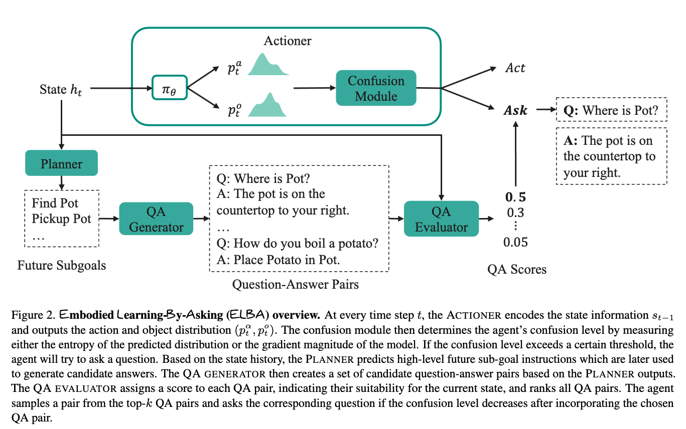
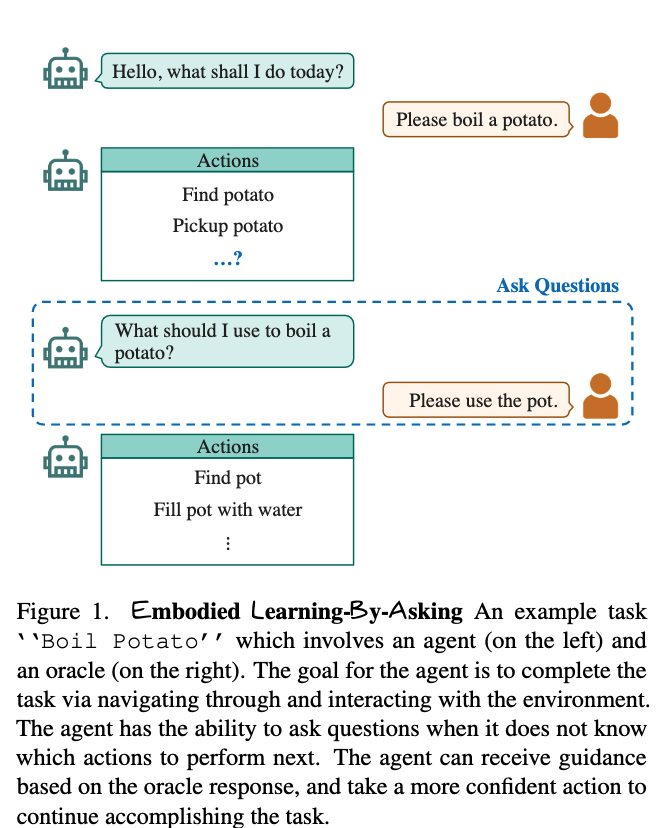
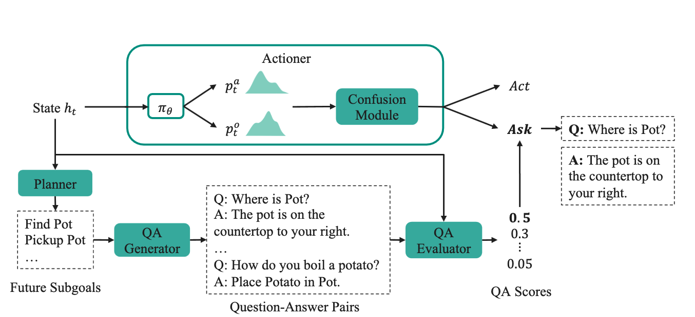

[TOC]
- Title: Learning by Asking for Embodied Visual Navigation and Task Completion
- Author: Ying Shen et. al.
- Publish Year: 9 Feb 2023
- Review Date: Thu, Mar 2, 2023
- url: https://arxiv.org/pdf/2302.04865.pdf
Summary of paper

Motivation
- despite recent progress on related vision-language benchmarks, most prior work has focused on building agents that follow instructions rather than endowing agents the ability to ask questions to actively resolve ambiguities arising naturally in embodied environments.
Contribution
-

-
we introduce an Embodied Learning by asking (ELBA) model that learns when to ask and what to ask for vision-dialog navigation and task completion. in contrast to prior work, our proposed model can ask questions both in templates and free-form formats
-
we demonstrate the effectiveness of the proposed approach and show that ELBA outperforms baselines on vision-dialog task completion
-
we further verify that the ability to dynamically ask questions improves task performance in embodied household tasks
Method overview

- at every time step $t$, the Actioner encodes the state information $s_{t-1}$ and outputs the action and object distribution (i.e., pick an action, pick an object to interact with) $p_t^a, p_t^o$ . The confusion module then determines the agent’s confusion level by measuring either the entropy of the predicted distribution or the gradient magnitude of the model
- if the confusion level exceeds a certain threshold, the agent will try to ask a quesiton
- based on the state history, the PLANNER predicts high-level future sub-goals instructions which are later used to generate candidate answers
- The QA generator then creates a set of candidate question-answer pairs based on the planner outputs.
- THe QA evaluator assigns a score to each QA pair, indicating their suitability for the current state, and ranks all QA pairs
- The agent samples a pair from the top-k QA pairs and ask the corresponding question if the confusion level decreases after incorporating the chosen QA pair
When to ask
- If the confusion level (e.g., the entropy of action and object distribution) exceeds the threshold (meaning that the agent is not confident about its next move), the agent will try to ask a question
What to ask
- The QA generator generates a set of candidate question-answer pairs from the extracted future sub-goals.
- Then QA evaluator assigns a score $\phi(q_t^i, a_t^i)$ to each candidate question-answer pair by measuring the similarity between the state information and the question-answer pair.
- The motivation is that, based on the current state information, the most suitable question-answer pair should have the highest similarity score among all candidate pairs.